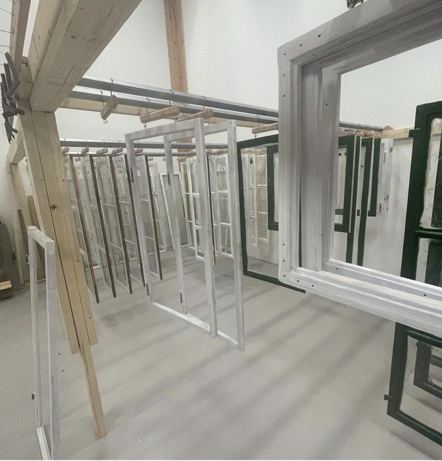

Fönsterrenovering i Östersund och Jämtland
Gamla fönster tycker jag ska tas om hand och renoveras istället för att bytas ut. De är husens ögon och har tillverkats för just ditt hus. Fönster förut gjordes uteslutande av kärnfura och målades med linoljefärg — ett material och hantverk som håller i generationer när det får rätt vård.
Vinsterna med att renovera
Gamla fönster är ofta tillverkade av kärnfura — ett tätvuxet virke som står emot väder och vind betydligt bättre än mycket av det virke som finns på marknaden idag. Med rätt vård kan ett välgjort renoverat fönster fungera i flera generationer till.
Dessutom är de gamla fönstren en del av husets själ. Profiler, glas och proportioner är anpassade efter just ditt hus. Min utgångspunkt är alltid att se om renovering är möjlig — men ibland är fönstren så slitna att en nytillverkning är det bästa alternativet. Då kan jag hjälpa dig med det också, med nya kulturfönster.
Så går en fönsterrenovering till
Jag tar hand om hela processen från det att vi träffas hemma hos dig tills fönstren sitter tillbaka på plats, färdigmålade med linoljefärg. Allt arbete sker i min verkstad i Östersund.
Renoveringen börjar med att all gammal färg tas bort från hela fönsterbågen, inklusive profiler. Kittet tas bort och glasrutorna lyfts varsamt ur. Om delar av virket är rötskadat ersätts det med nytt virke. Därefter finslipas bågen och grundmålas med linoljefärg. När grunden torkat sätts glaset tillbaka med nytt linoljekitt, och sedan målas fönstret ytterligare två till tre gånger med linoljefärg. Eventuella hörnjärn rostskyddsbehandlas innan de återmonteras och målas.
Under tiden fönsterbågarna är hos mig täcks karmarna med fönsterparaplyer eller kanalplast — det är ljust, varmt och mycket trevligare än plywood eller OSB-skivor för dig som bor i huset.
